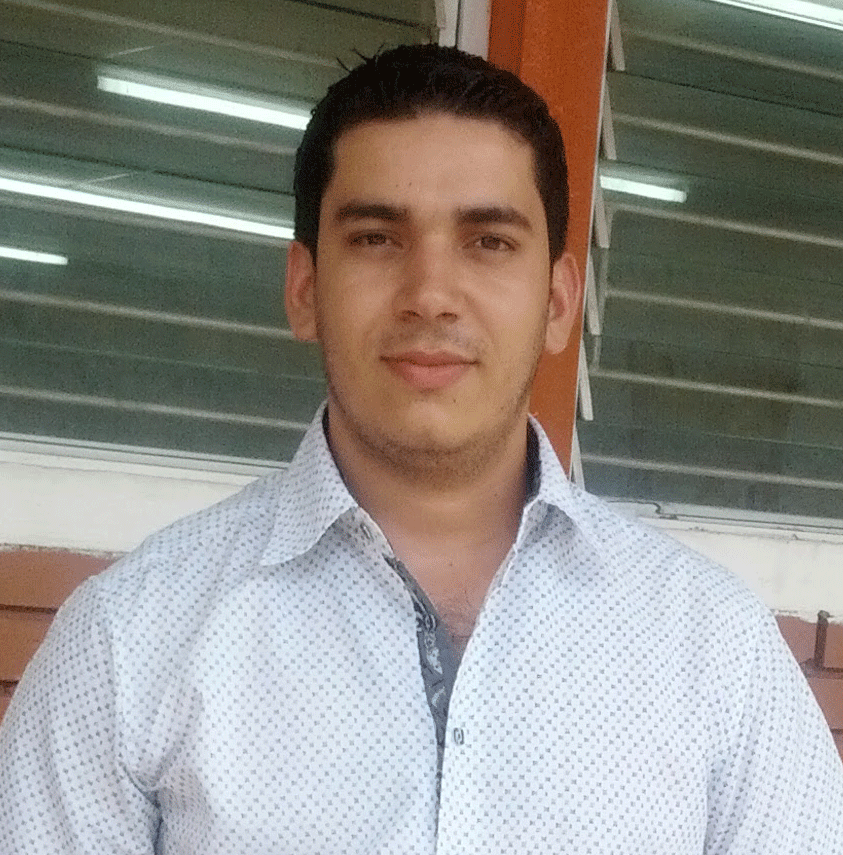

Información Personal

- Nombres: Ramón Alberto
- Apellidos: Guevara Suarez
- Edad:27
Ingeniero en informática, especializado en reparación y mantenimiento de equipos
informático con más de 10 años de experiencia.
Información de Perfil
- Perfil:Empresario
- Idioma:Español